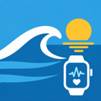

SurfCast Privacy Policy
Effective October 29, 2026
The short version
- SurfCast has no accounts, no ads, no analytics and no tracking.
- Your surf sessions, location, heart rate and ratings stay on your iPhone and Apple Watch. The developer never receives them.
- To show forecasts, the app asks a free weather service for conditions at a spot's coordinates. Nothing that identifies you is sent with those requests.
- You decide if anything is shared, for example when you send a session to a friend.
Who we are
SurfCast is an iPhone and Apple Watch app made by Anthony Facchini, an independent developer ("we"). This policy covers the SurfCast app on iPhone and Apple Watch.
Information that stays on your devices
- Your location. If you allow it, the iPhone app uses your approximate location to sort surf spots by distance. It is used on your iPhone and is not sent to us.
- Surf sessions. During a session the Apple Watch app records GPS positions, speed, wrist motion and paddle strokes to detect waves. Sessions are sent from your watch to your iPhone over Apple's WatchConnectivity and saved only in the app's storage on your devices.
- Health data. With your permission, the watch app reads your heart rate during a session and saves the session as a surfing workout, with its route, in Apple Health. If a session doesn't reach your iPhone, you can ask the iPhone app to rebuild it from those workouts (Sessions → Missing a Session?); it then reads your surfing workouts, their routes and heart rate from Health, on your iPhone only. Health data is never used for advertising or sold, and it is not sent to us or to any other service.
- Your ratings, favorites and settings. Session ratings, favorite spots, surf alert settings and card layouts are stored on your iPhone. SurfCast learns your preferred conditions from your ratings on your device.
Deleting a session in the app removes it from SurfCast. Deleting the app removes everything it stored. Workouts saved to Apple Health stay in Health until you delete them there.
Services the app connects to
- Open-Meteo (terms) provides wave, wind, tide, weather and elevation data. The app sends the coordinates of the surf spots it shows forecasts for. After a session, it sends the approximate coordinates of the spot you surfed so it can record that session's conditions. No name, account, device identifier or session data is included. Like any web service, Open-Meteo can see your device's IP address when it answers a request.
- Apple provides maps, place search, local notifications and in-app purchases. If you search for a beach, the text you type goes to Apple Maps. Purchases are handled entirely by Apple; we never see your payment details. See Apple's privacy policy.
- YouTube live surf cams load only when you open one, and are subject to Google's privacy policy. Links to other surf websites open in your browser.
Sharing you choose
SurfCast only shares when you tap a share button: a forecast picture, a session summary picture, or a session data file (.surfcast) sent to a friend. Shared session files and pictures leave out the first and last 2 minutes of the GPS path, so where you parked or live stays private. Once shared, the recipient can keep the file.
Surf alerts
If you turn on Surf Alerts, the app checks forecasts for your favorite spots in the background and shows notifications created on your iPhone. No push notification service or server is involved.
Information we collect
We do not collect, store or sell any personal information. We have no servers that receive your data, and the app contains no third-party analytics, advertising or tracking code. If you email us, we use your email only to reply.
Children
SurfCast is not directed at children under 13, and we do not knowingly collect information from anyone, of any age.
Your choices
- Turn location, Health and notification access on or off at any time in the iPhone and Apple Watch Settings apps.
- Delete individual sessions in the app, or delete the app to remove all of its data.
- Manage or cancel SurfCast Pro in Settings → your name → Subscriptions.
Changes and contact
If this policy changes, the new version will be posted on this page with a new effective date. Questions? Email surfcastsupport@gmail.com.